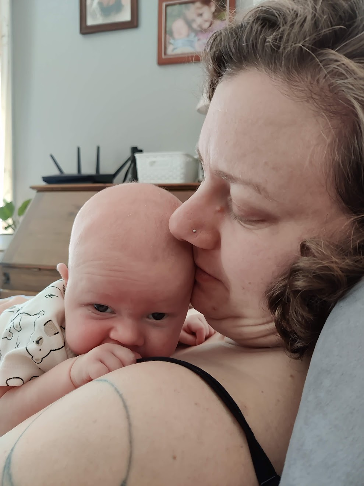
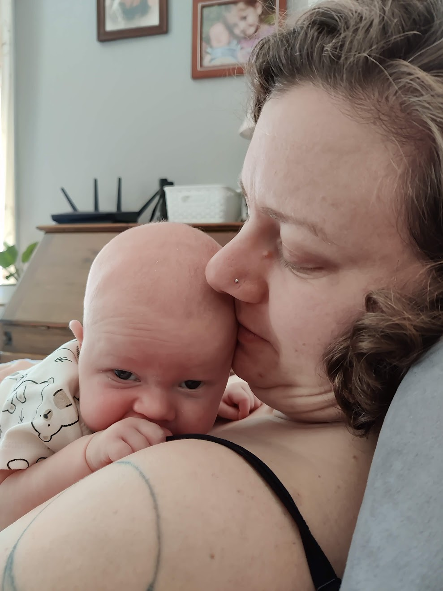

Alicia's Biography
Alicia’s journey began in the heart of Iowa, though her childhood and teenage years were defined by movement and exploration. Growing up across the Midwest in places like Minnesota and Wisconsin, she developed adaptability and openness to new experiences that would guide her throughout life. Eventually, she and her family settled in Vermont, a place that quickly felt like home. High school was a meaningful step in childhood, filled with deep friendships that would last a lifetime and start the beginnings of her passion for adventure and service.
Before college, Alicia broadened her horizons through travel, spending several months immersed and living in India and Australia. These experiences deepened her appreciation for global perspectives and human connection. Returning to Vermont, she took on one of her most formative adventures: a cross-country Bike & Build trek across the southern United States. Through this program, Alicia not only biked thousands of miles across the US but also contributed to Habitat for Humanity, raising funds and helping construct homes for families in need.
Once she started college, Alicia earned a degree in architecture, which ended up not quite suiting her desire for work in life. Her path then led her back to Minnesota, where she joined a unique intentional community dedicated to living with and supporting individuals with special needs in living more independently. It was during this meaningful chapter that she met her future husband, Daniel.
The worldwide COVID-19 pandemic brought about a spark of change, inspiring Alicia to shift her focus toward healthcare. She completed postgraduate studies in nursing, driven by a growing desire to provide care and support on a personal level. Now a devoted mother herself, Alicia has found her calling as an obstetrics nurse, guiding women through the transformative journey of childbirth and motherhood with compassion, strength, and empathy.